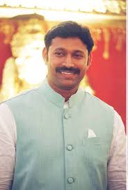

YSR
Congress
YSR CP
YSR Congress Party or Yuvajana Shramika Rythu Congress Party (literally means: Youth, Labour and Farmer Congress Party) is a regional political party in the states of Andhra Pradesh and Telangana in India. Currently, its president is Y. S. Jaganmohan Reddy, the son of former Andhra Pradesh chief minister Y. S. Rajasekhara Reddy (popularly known as YSR) in 2011. Both YSR and Jaganmohan Reddy (called Jagan by his followers) had been members of the Indian National Congress.Jagan was also elected as the national president of the party.
Background
After the death of the then-incumbent Chief Minister Y. S. Rajashekhara Reddy in a helicopter crash in September 2009, his son Jaganmohan Reddy, the incumbent MP from Kadapa, started an Odarpu Yatra (condolence tour) across Andhra Pradesh, supposedly to console the families of those who had committed suicide or died of shock after the death of his father. This was however not supported by the Congress leadership.Congress President Sonia Gandhi claimed the rising volatile situation in the state regarding the Telangana issue as the main reason for opposing the "Odarpu Yatra". Defying the Congress High Command's order to call off the tour, Jagan went ahead with the first leg of the "Odarpu Yatra" in the West Godavari and Khammam districts from in April 2010.[8]
Meanwhile, Sakshi TV news channel and Sakshi newspaper, had been continuously criticizing the new Chief Minister Konijeti Rosaiah and the Congress leadership at New Delhi. In a special programme on Sakshi TV to mark the 125th anniversary celebrations of the Congress party, a voice-over made remarks on Sonia Gandhi and the Prime Minister Manmohan Singh on the "current state of affairs" in the State, which invited anger and protests from the Congress loyalists and increased the gap and friction between Jagan and the Congress loyalists.The channel later deleted those remarks in a re-telecast.
Creation of the new party
After accusing the Congress of ill-treating him and creating rifts in his family by luring his uncle YS Vivekananda Reddy (younger brother of YSR) with a state ministerial berth in the aftermath of the death of his father, Jagan and his mother Y. S. Vijaya Lakshmi resigned from the Kadapa Lok Sabha and Pulivendula Assembly constituencies respectively and also as members of the Congress in November 2010. They took over the leadership of an existing YSR Congress Party in March 2011, which was founded by Siva Kumar, a Telangana-based advocate and a fan of YSR, in 2009. Many Congress leaders loyal to Jagan also quit the Congress and joined the YSR Congress. This resulted in the weakening of the Congress's strength in both the assembly and the Lok Sabha, necessitating by-elections. In the ensuing by-elections, the party won most of the vacated seats with record breaking majorities, with many of the Congress and the Telugu Desam Party (the main opposition) candidates losing their deposits.[12] The party has a strength of 67 members in the 175-member state assembly and 8 members in the Lok Sabha(out of 25 in AP) as the election results declared on 17 May 2014, simultaneously.
Electoral performance
In March 2012, YSR Congress won the Kovur assembly seat in Nellore district in a by-election.
On 15 June 2012, YSR Congress won the Nellore Lok Sabha seat and 15 of 18 assembly seats in Andhra Pradesh. YSR Congress leaders P. Subhash Chandra Bose from Ramachandrapuram constituency of East Godavari district and Konda Surekha from Parakala constituency of Warangal district, both ministers in the YSR cabinet, had switched to YSR Congress party but lost their races.[14] The Performance of the party in 2014 is pretty good, however lost the elections to its political rival Telugu Desam Party.

|
|
| YSRCP flag |
Andhra Pradesh map |
Leadership
In a governmental system, a party leader acts as the official representative of their political party. The party leader is typically responsible for managing the party's relationship with the general public.
|
|
Dr. Yeduguri Sandinti Rajasekhara Reddy
the two-time Chief Minister of Andhra Pradesh, ruled roost in AP politics like a colossus and rose to the Himalayan heights on the state political arena through his sheer hard work and simplicity.
Born on July 8, 1949 at Pulivendula in Kadapa district, YS Rajashekar Reddy studied medicine and served as a medical officer at the Mission Hospital at Jammalamadugu for a brief period before launching his own charitable hospital named after his father YS Raja Reddy, a well known public figure in the district during those days.
After graduating in medicine from Mahadevappa Rampure Medical College (MRMC) at Gulbarga in Karnataka,YS Rajashekar Reddy had completed his House Surgeon course at S.V. Medical College, Tirupati in AP and also led the House Surgeons’ Association on the campus as its president.
Not satisfied with the service he had rendered through his charitable hospital, YS Rajashekar Reddy jumped into politics at the young age of 29 and successfully contested the Pulivendula assembly seat on Reddy Congress ticket in 1978 with the sole motto of serving the public through political platform.
He later joined the Indian National Congress and played an active role in the state congress politics. Starting with the 9th General Elections in 1989, YSR had been successively elected to the Lok Sabha for four consecutive terms and also held the PCC President’s post for two terms during 1983-85 and 1998-2000 respectively.
While the most popular social networking website Yahoo called him ‘a mass leader who ruled the hearts of people in Andhra Pradesh’, the most respected BBC channel described him as ‘a champion of the social welfare schemes’.
YS Rajashekar Reddy was one of the very few politicians who won all successive elections they contested for Lok Sabha and the state assembly. Raising the spirits of all congress leaders and the workers, YS Rajashekar Reddy undertook a massive two month-long Pada Yatra in the state in 2003 covering all the districts over a stretch of 1475 km in hot summer and brought the Congress party closer to the people while he earned a perennial place in the hearts of millions of Telugu people.
The results were reflected in he congress victory in successive assembly elections held from 2004 and people catapulted the congress party to power thanks to his popularity among the masses, especially among the downtrodden.
YS Rajashekar Reddy turned AP into a welfare state by introducing various welfare schemes such as housing for poor, Rs 2-a-kg rice, Jalayagnam, free power to farmers, fee reimbursement, land distribution, Arogyasri, PavalaVaddi and pension.
His sudden and tragic demise in 2009 left the state in a severe political crisis and deprived the people of their due benefits and progress.
It was around 2004 after he became the Chief Minister, YSR was walking through a photo exhibition of his historic Pada Yatra, that brought not just a regime change,but also a paradigm shift, perhaps in Gandhi Bhavan. As he was glancing through hundreds of neatly arranged pics, he suddenly bent forward at some image. His eyes became wide. He then began observing every pic. He found a commoner in almost all pics – sometimes offering a glass of water. YSR couldn’t place the man. He didn’t know he was. The man was there in every photo – from Chevella, the starting point, to Ichapuram, the ending point. “Who is this man?” he asked party workers pointing towards the image. No one knew who he was. Even long timers didn’t know him. But, he was there – in every picture and every frame serving YSR. He was with YSR all along the grueling and back-breaking yatra. But, this man was nowhere to be seen after the Padayatra. Never ever did YSR meet him after the yatra. YSR then asked party leaders to locate and bring the man to him. The workers went into a tizzy. They scoured all the 23 districts and made frantic enquiries with the man’s photo in hand. Finally, they located the man. He was from a small, non-descript village in Nellore, a shepherd living in a ramshackle, ready-to-cave-in hut. When Congress biggies descended on his village, the man was initially terrified. “I adore YSR. When I heard he was doing Padayatra, I wanted to be of some help to him. So I went to Chevella, followed him all along. I served him when he suffered sun stroke. I had offered him water and served him. Once the Yatra was over, I came back to the village,” said the cagey and confused man, brow furrowed with worry and fear. The man was then brought to Hyderabad and presented before YSR. YSR paced ahead and went on to hug him warmly. He thanked him for serving him. The man was trembling like a leaf with excitement! His hero was right in front of him and had just hugged him with a warmth that goes beyond words and descriptions. He was speechless and overcome with emotion. His leader not just recognized him, but even made enquiries and finally met him. Here was a ‘Rajah’ who was hugging a commoner. YSR then turned to his friend and told him thus: “This man left his family, income source and livelihood for two months to be on my side. I can never pay back my debt of gratitude to this man” He then asked his acolyte to deposit a handsome six-figure amount in the shepherd’s account so that he can live off the interest accruals on the amount. Needless to say, ‘Rajah’s command became a reality in a matter of few hours.
Prev 1 2 3
YSRCP Navaratna YS Rajashekar Reddy YS Rajashekar Reddy Emperor of Corruption YS Rajashekar Reddy Central Assistance to AP
YSR Gadapa Gadapaku YSR
Prajalachentha
mosagadu
|

|
Mr. YS Jagan Mohan Reddy
fondly known as Jagan to millions of Telugus in AP and elsewhere in the world, is a young politician of iron will coupled with an irrefutable commitment to the edifice of his father’s legacy and the principles of welfare state as focused and enunciated by YSR.
Not the one to be ever confronted by a Hamlet’s dilemma, the 39-year old untiring leader thoroughly believes in fast decision making for finding solutions to nagging issues and is always guided by a clear set of ideas and ideals on issues confronting the AP state.
Determined as he was to move on with his Odarpu Yatra to console the families of those who gave up their lives after the sudden and tragic demise of YSR in 2009, YS Jagan Mohan Reddy quit the Congress when the party bosses in Delhi ordered him not to go ahead with it.
YS Jagan Mohan Reddy launched the YSRCP with people’s support and then went ahead with his Odarpu Yatra to keep the promises he made to the families.
The same determination made him launch the YSR Congress Party as part of his unflinching efforts to pick up the political gauntlet from where his father left and serve the masses with the same zeal and enthusiasm exhibited by his father.
YS Jagan Mohan Reddy fired his first salvo in state politics by vigorously campaigning on behalf of the Congress party in 2009 elections and proved himself to be on par with his father in attracting crowds. This little but rich experience helped him undertake Odarpu Yatra in several phases over a period of two and a half years and move closer to the people across the state.
His vigorous Odarpu Yatra schedules helped him establish his credentials as a strong political leader in the state and also as a credible alternative to the late YS Rajashekar Reddy.
YS Jagan Mohan Reddy is the only political leader in the state to have visited thousands of towns and villages in a short period to study the people’s problems as part of his Odarpu Yatra and evolve ways and means to find permanent solutions.
The YSRCP’s manifesto is a reflection of what he experienced on people’s problems when he moved closer to them and what he thought of as their solutions to be implemented when he attains political power.
YS Jagan Mohan Reddy first entered the Lok Sabha in 2009 elections after winning the Kadapa seat on Congress ticket but resigned it after falling out with the Congress High Command. He launched his own YSR Congress Party and won the seat with a record margin of 545, 043 votes in the by-election.
YS Jagan Mohan Reddy, who showed guts and wits in questioning the harassing tactics of the Congress High Command in humiliating him after the death of his father, is determined to pursue his father’s welfare polices when his party comes to power and serve the poor with the same spirit, enthusiasm and energy displayed by YS Rajashekar Reddy. |
MPs
A member of parliament (MP) is the representative of the voters to a parliament. In many countries with bicameral parliaments, this category includes specifically members of the lower house, as upper houses often have a different title. Member of Congress is an equivalent term in other jurisdictions.
|
|
|
|
|
| Sri Vijaya Sai Reddy Rajya Sabha |
Sri Vemireddy Prabhakar Reddy Rajyasabha |
Sri Mekapati Rajamohan Reddy Nellore |
Sri Y.V.Subbareddy Ongole |
|

|
|
|
| Sri Y.S. Avinash Reddy Kadapa |
DR. V. Varaprasad Rao Tirupati |
Sri P.V. Mithun Reddy Rajampeta |